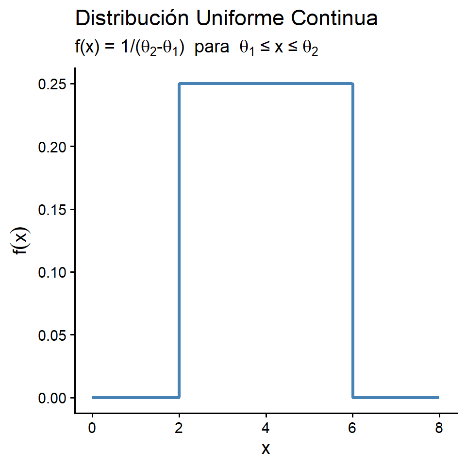
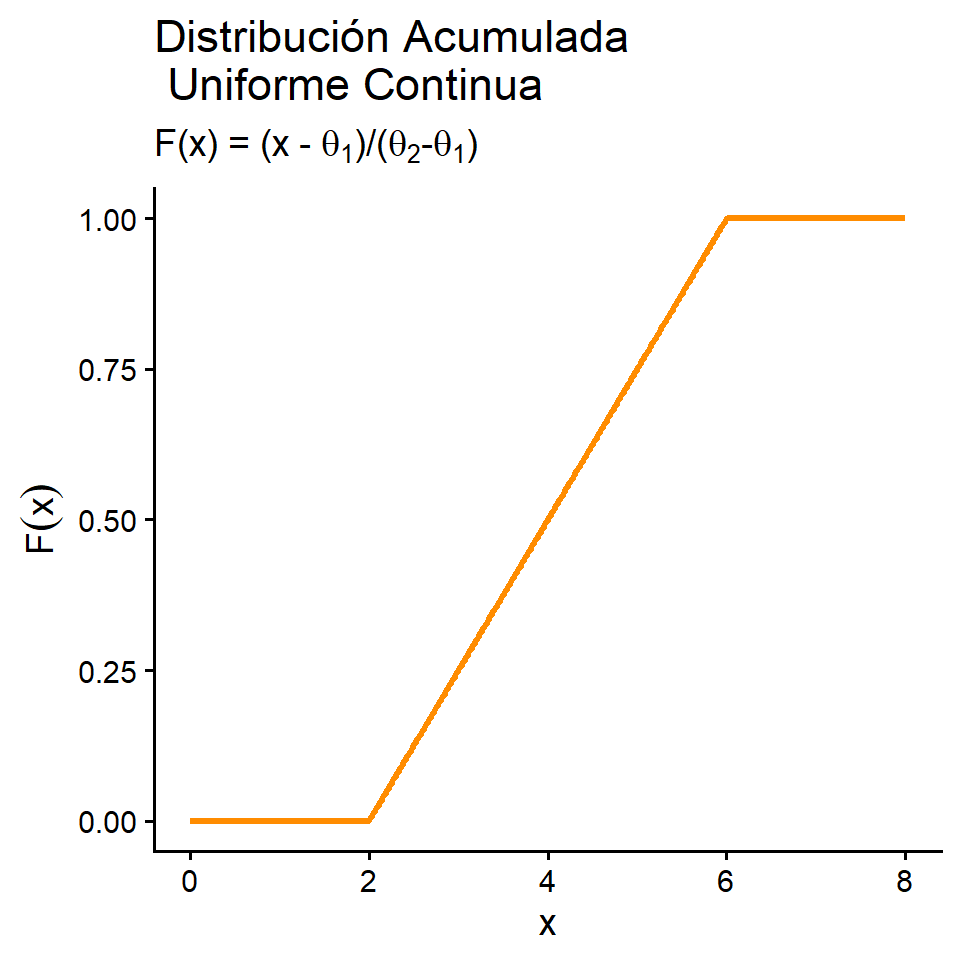

Supongamos que una variable \(X\) puede tomar valores al azar en un rango \((\theta_1,\theta_2)\) y que la probabilidad de que \(X\) tome valores en cualquier intervalo de longitud fija en \((\theta_1,\theta_2)\) sea la misma.
Definició: Si \(\theta_1 < \theta_2\), se dice que una variable aleatoria \(X\) tiene distribución de probabilidad uniforme en el intervalo \((\theta_1,\theta_2)\) si y solo si la función de densidad y distribución de \(X\) son:
\[\small f_X(x)= \begin{cases} \dfrac{1}{\theta_2-\theta_1}, & \theta_1 \le x \le \theta_2,\\[6pt] 0, & \text{en cualquier otro punto.} \end{cases} \]
\[\small F_X(x)= \begin{cases} 0, & x<\theta_1,\\[4pt] \dfrac{x-\theta_1}{\theta_2-\theta_1}, & \theta_1 \le x \le \theta_2,\\[10pt] 1, & x>\theta_2. \end{cases} \]
Se escribe: \(X \sim U(\theta_1,\theta_2)\).


Ejemplo:
La llegada de clientes a una caja en un establecimiento sigue una distribución de Poisson.
Se sabe que durante un periodo determinado de 30 minutos, un cliente llega a la caja.
Encuentre la probabilidad de que el cliente llegue durante los últimos 5 minutos del periodo de 30 minutos.
Solución:
Dado que ocurrió exactamente un suceso en el intervalo (0,30), el tiempo real del suceso está uniformemente distribuido en ese intervalo. Si X denota el tiempo de llegada, entonces:
\[ \mathbb{P}(25 \le X \le 30) = \int_{25}^{30} \frac{1}{30}\,dy = \frac{30-25}{30} = \frac{5}{30} = \frac{1}{6}. \]
La probabilidad de que la llegada ocurra en cualquier otro intervalo de 5 minutos también es (1/6).
Si \(\theta_1<\theta_2\) y \(X\) es uniforme en \((\theta_1,\theta_2)\), entonces \(\small \mu=E(X)=\frac{\theta_1+\theta_2}{2}, \quad \operatorname{Var}(X)=\frac{(\theta_2-\theta_1)^2}{12}\).
Prueba. Sea \(f_X(x)=\frac{1}{\theta_2-\theta_1}\) para \(\theta_1\le x\le \theta_2\) y \(0\) en otro caso.
\[ \small \begin{aligned} E(X) &=\int_{-\infty}^{\infty} x f_X(x)\,dx =\int_{\theta_1}^{\theta_2} x\,\frac{1}{\theta_2-\theta_1}\,dx =\frac{1}{\theta_2-\theta_1}\left[\frac{x^2}{2}\right]_{\theta_1}^{\theta_2} = \frac{\theta_2^2-\theta_1^2}{2(\theta_2-\theta_1)} =\frac{\theta_1+\theta_2}{2}. \end{aligned} \]
\[\small \begin{aligned} E(X^2) &=\int_{-\infty}^{\infty} x^2 f_X(x)\,dx =\int_{\theta_1}^{\theta_2} x^2\,\frac{1}{\theta_2-\theta_1}\,dx =\frac{1}{\theta_2-\theta_1}\left[\frac{x^3}{3}\right]_{\theta_1}^{\theta_2} =\frac{\theta_2^3-\theta_1^3}{3(\theta_2-\theta_1)} =\frac{\theta_2^2+\theta_1\theta_2+\theta_1^2}{3}. \end{aligned} \]
\[\small \begin{aligned} \operatorname{Var}(X) &=E(X^2)-\big(E(X)\big)^2 =\frac{\theta_2^2+\theta_1\theta_2+\theta_1^2}{3} -\left(\frac{\theta_1+\theta_2}{2}\right)^2 \\ &=\frac{4(\theta_2^2+\theta_1\theta_2+\theta_1^2)-3(\theta_1^2+2\theta_1\theta_2+\theta_2^2)}{12} \\ &=\frac{\theta_2^2-2\theta_1\theta_2+\theta_1^2}{12} =\frac{(\theta_2-\theta_1)^2}{12}. \end{aligned} \]
Suponga que (Y) tiene una distribución uniforme en el intervalo (0,1).
a. Encuentre (F(y)).
\[ F_Y(y)= \begin{cases} 0, & y<0,\\[4pt] \displaystyle \int_{0}^{y} 1\,dt = y, & 0\le y \le 1,\\[8pt] 1, & y>1. \end{cases} \]
b. Demuestre que \(P( Y\le a+b)\), para \(a \ge 0\), \(b \ge 0\) y \(a+b \le 1\) , depende solo de \(b\).
\[ P(a\le Y\le a+b) = F_Y(a+b)-F_Y(a) = (a+b)-a = b. \]
Ejemplo: Errores de medición con distribución uniforme:
En la medición del alcance de una sonda acústica mediante triangulación, el error en el tiempo de llegada del frente de onda puede modelarse como una variable uniforme en el intervalo (-0.05) a (+0.05) μs (microsegundos) , según Perruzzi y Hilliard (1984).
a. ¿Cuál es la probabilidad de que una medición de tiempo de llegada sea precisa con tolerancia de (0.01 μs)?
Sea \(X\) la cantidad del error de medición, es decir, \(X\sim U(-0.05, 0.05)\). Para este caso, la función de distribución es: \[\small F(x) = \frac{x - (-0.05)}{0.05 - (-0.05)} = \frac{x + 0.05}{0.1}, \quad \text{para } -0.05 \le x \le 0.05. \]
Por tanto: \(\small P(-0.01 \le Y \le 0.01) = F(0.01) - F(-0.01) = \frac{0.01 + 0.05}{0.1} - \frac{-0.01 + 0.05}{0.1} = \frac{0.02}{0.1} = 0.2.\)
La distribución normal o gaussiana es, probablemente, la distribución continua más conocida y utilizada.
Definición: Se dice que una variable aleatoria \(X\) tiene distribución de probabilidad normal si y solo si, para \(\sigma > 0\) y \(-\infty < \mu < \infty\), su función de densidad es:
\[ f_X(x) = \frac{1}{\sigma \sqrt{2\pi}} \exp!\left(-\frac{(x-\mu)^2}{2\sigma^2}\right), \quad -\infty < x < \infty. \]
Note que la distribución tiene dos parámetros: \(\mu\) y \(\sigma\).
seeing-theory.brown.edu/probability-distributions/es.html
Teorema: Si \(X\) es una variable aleatoria normalmente distribuida con parámetros \(\mu\) y \(\sigma\), entonces: \(E(X) = \mu, \quad Var(X) = \sigma^2\)
La prueba se realizará más adelante, al estudiar la función generadora de momentos para el caso continuo.
library(ggplot2)
set.seed(123)
# Datos simulados
mu <- 5
sigma <- 2
n <- 1000
x <- rnorm(n, mean = mu, sd = sigma)
df <- data.frame(x)
#Histograma + densidad
ggplot(df, aes(x)) +
geom_histogram(aes(y = ..density..), bins = 30, fill = "grey85", color = "grey40") +
stat_function(fun = dnorm, args = list(mean = mu, sd = sigma), linewidth = 1) +
labs(
title = "Distribución Normal + Histograma",
x = "x", y = "Densidad"
) +
theme_classic(base_size = 13)Las áreas bajo la función de densidad normal correspondientes a \(P(a \le Y \le b)\) requieren evaluar:
\[ P(a \le Y \le b) = \int_{a}^{b} \frac{1}{\sigma \sqrt{2\pi}} \exp\left(-\frac{(x-\mu)^2}{2\sigma^2}\right)\,dx, \qquad -\infty < a < b < \infty. \]
No existe una expresión de forma cerrada para esta integral, por lo que se recurre a la normal estándar \(\Phi\), tablas o métodos numéricos.
Ejemplo
a. Calcular \(P(2 \le Y \le 4)\) para \(Y \sim N(0,3)\).
b. Hallar b tal que \(P(Y \le b)=0.05\) para \(Y \sim N(0,3)\).
Nota: !!!La función de densidad normal es simétrica alrededor del valor , de modo que las áreaspueden ser descritas en sólo un lado de la media (en el caso de las tablas).
Ejemplo.
Denote con \(Z\) una variable aleatoria normal con media (0) y desviación estándar \(\sigma = 1\).
a. Encuentre \(P(Z > 2)\)
o de forma equivalente:
b. Encuentre \(P(-2 \le Z \le 2)\)
c. Encuentre \(P(0 \le Z \le 1.73)\)
NOTA: Siempre podemos transformar una variable aleatoria normal en una variable aleatorianormal estándar si usamos la relación:
\[ Z = \frac{X-\mu}{\sigma} \]
Sea \(Z\) una variable aleatoria normal estándar, encuentre el valor de \(z_0\) tal que:
a. Encuentre \(P(Z > z_0) = 0.5\)
b. Encuentre \(P(Z < z_0) = 0.8643\)
c. Encuentre \(P(-z_0 < Z < z_0) = 0.90\)
\(P(-z_0 < Z < z_0) = F(Z_0) - F(-Z_0) = F(Z_0) - [1-F(Z_0)] = 2F(Z_0)-1\)
\(\rightarrow 2F(Z_0)-1 = 0.90 \rightarrow F(Z_0) = \frac{1+0.90}{2}\)